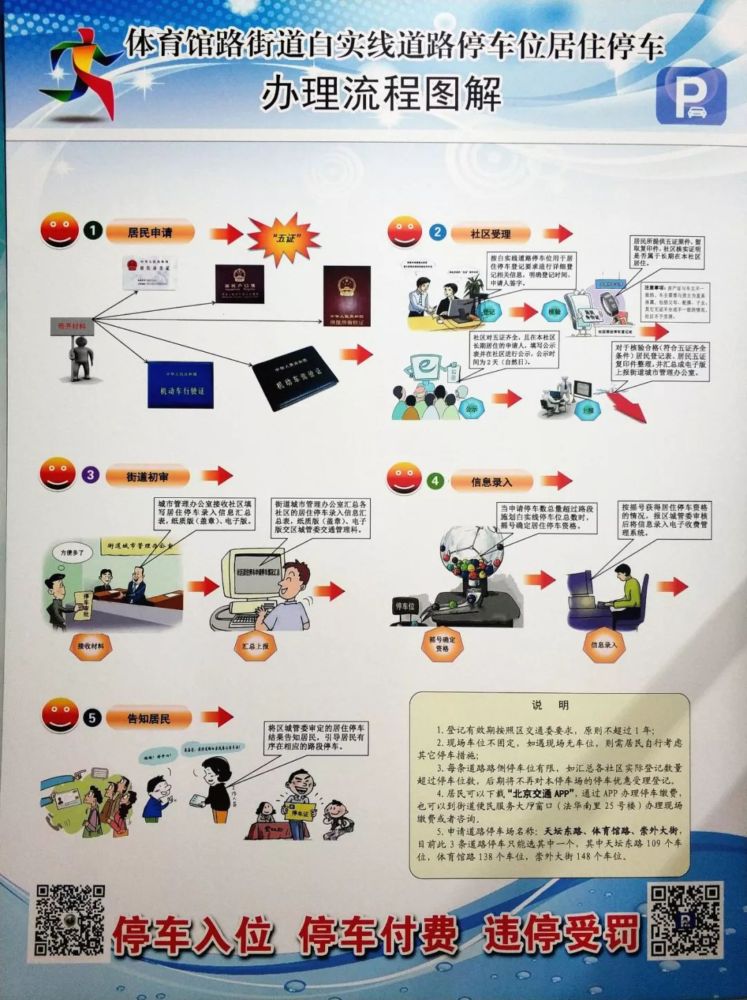

缓解停车难问题，体育馆路街道这么做……
来源：北京东城
为缓解停车难、停车乱的局面，近日，体育馆路街道多措并举拓展停车资源，在东西四块玉路侧、磁器口大街南段路侧和法华寺街路侧等，建成3处路侧自治管理停车场，规范车位469个。
停车紧张
居住区停车缺口大
据体育馆路街道办事处副主任陈四清介绍，体育馆路街道不但有多处老旧小区，还有大面积拆迁滞留平房区，要解决停车难问题，可操作空间小、解决难度大。
为摸清地区停车供需情况，街道于去年10月聘请清华同衡规划设计研究院，对地区停车设施现状分布位置与规模进行专业调查。调查显示，体育馆路街道区域内共有74个停车场，划线车位5508个，其中居住类停车场共20个，划线停车位1936个，而居住区停车需求总量为4495个，停车缺口较大。
居民徐女士说：“原来我们这儿一是停车难，二是乱停车的多，门口挺小的地方能挤着停好几辆车，居民想出来都很困难。”
增加车位
利用闲置空地缓解停车难
陈四清表示，为解决停车缺口，街道主要从规范、挖潜入手，努力缓解地区居民停车难的问题。“我们将原来无人管理、居民自发形成的停车场地进行规范化管理，施划标准停车位，委托第三方公司进行专业化管理，实现自治管理。”
据介绍，体育馆路街道现已在东西四块玉路侧、磁器口大街南段路侧和法华寺街路侧等，建成3处路侧自治管理停车场，规范车位469个，缓解周边居民停车需求。“此外，我们正在规范敬业西里南巷、四块玉中街等2处路侧自治管理停车场，提供便民车位125个。同时为居民提供优惠的价格，用缴纳的停车费支付停车公司的管理费用。”陈四清说。
据体育馆路街道城管执法队副队长李博介绍，东西四块玉停车场原为2006年城中村拆迁后遗留地块，因长期失管，环境脏乱差，安全隐患多。经过对周边居民的意向调查，街道最终确定引入社会资金建设便民停车场，由此增加了便民停车位92个。
“这种做法既改善了拆迁遗留地的环境，又缓解了周边居民停车难的问题。目前街道还在与新世界公司协商，争取开放崇外六号地拆迁滞留区内已拆迁的空地，建成临时便民停车场，缓解拆迁滞留区内居民的停车需求。”李博说。
错时停车
挖掘周边单位停车潜力
据了解，错时停车共享也是体育馆路街道挖掘停车潜力的一大亮点。街道正在联系驻街单位德必文创园、天雅珠宝城等，协调日间停车场夜间对居民开放，以进一步缓解周边居民夜间停车难题。
以天雅珠宝城为例，商场现有地面停车位392个，晚上空余近200个停车位，接下来将通过一定收费对周边居民提供夜间停车服务。“驻街单位因为管理问题有疑虑，怕因为停车限号等问题占用停车资源。”陈四清说，最终街道沟通后，通过单位与居民签署承诺书的方式得到了解决。
规范停车
启用24套违停抓拍系统
陈四清介绍，为治理停车问题，街道还采取措施规范停车行为，“我们已经安装了24套违停抓拍系统，加强对违法违规停车行为的监管。同时，在各社区不断加强规范停车的宣传，增强居民‘停车入位、停车付费、违停受罚’的观念”。
在最近的白实线居住停车认证方面，体育馆路街道已有100多人符合“五证”要求，通过初审。
“我们周围的居民都非常认可停车入位，大家也都身体力行地支持。”家住体育馆路12号楼的居民许清琴说，只有大家都遵守规范，不占用消防通道，才能让道路更通畅，地区也更安全。